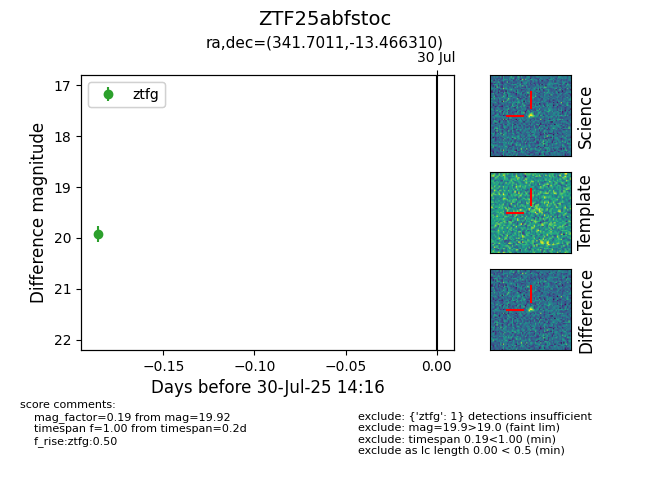

Target ZTF25abfstoc at 2025-07-30 14:16, see:
FINK: fink-portal.org/ZTF25abfstoc
Lasair: lasair-ztf.lsst.ac.uk/objects/ZTF25abfstoc
ALeRCE: alerce.online/object/ZTF25abfstoc
alt names
ZTF25abfstoc (ztf,fink)
coordinates:
equatorial (ra, dec) = (341.7011,-13.46631)
galactic (l, b) = (51.8262,-57.87033)
photometry
last ztfg=19.92
1 ztfg detections
